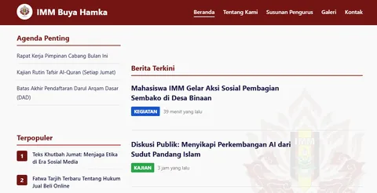
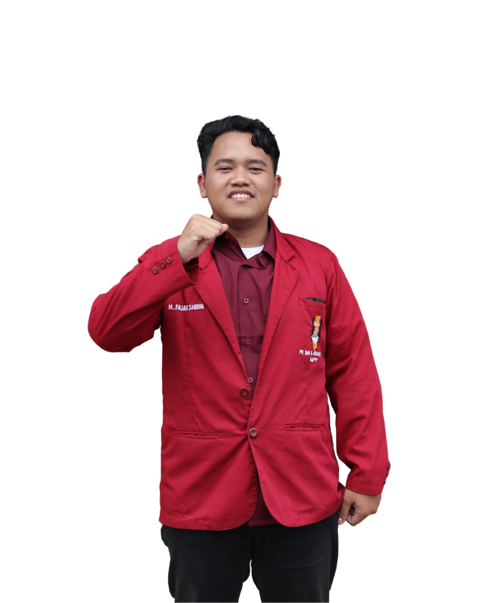
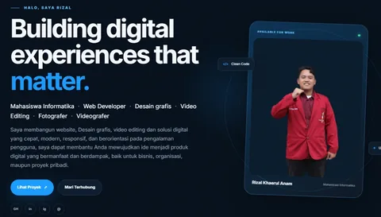
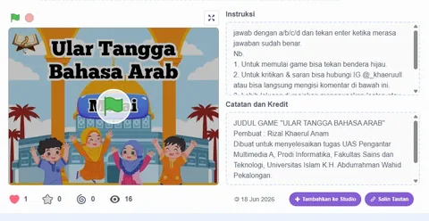
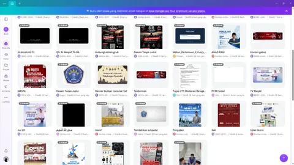
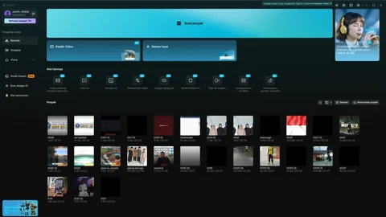

01 · WEBSITEWebsite IMM Buya Hamka
Website untuk memperkenalkan IMM Buya Hamka, organisasi dakwah yang berfokus pada pendidikan dan pengembangan karakter.
View project ↗HALO, SAYA RIZAL
Mahasiswa Informatika · Web Developer · Desain Grafis · Video Editing · Fotografer · Videografer
Pengembang web & kreator visual yang berfokus menciptakan pengalaman digital responsif, cepat, dan berorientasi pada hasil nyata untuk bisnis maupun proyek Anda.

Available for work </> Clean Code ✦ UI / UXTENTANG SAYA
Saya Rizal Khaerul Anam, mahasiswa S1 Informatika dengan ketertarikan pada pengembangan web, teknologi modern, desain grafis, video editing, fotografi, dan videografi.
Bagi saya, teknologi adalah alat untuk menciptakan sesuatu yang berguna. Saya senang mempelajari hal baru, bekerja secara kolaboratif, dan mengubah ide menjadi produk digital yang mudah digunakan.
Teknologi bukan hanya tentang kode, tapi tentang bagaimana kita membuat hidup orang lain menjadi lebih mudah.
Rizal Khaerul Anam
SELECTED WORK
Eksplorasi proyek, teknologi, dan pendekatan yang saya gunakan.

01 · WEBSITEWebsite untuk memperkenalkan IMM Buya Hamka, organisasi dakwah yang berfokus pada pendidikan dan pengembangan karakter.
View project ↗
02 · PERSONAL BRANDWebsite personal untuk membangun identitas profesional dan menampilkan karya secara terstruktur.
View project ↗
03 · GAMEGame quiz interaktif dengan materi bahasa Arab dasar, dikembangkan menggunakan Scratch.
View project ↗
04 · DESAINDesain berbagai kebutuhan visual, termasuk poster, infografis, dan desain sosial media.
View project ↗
05 · VIDEO EDITING 06 · FOTOGRAFER
06 · FOTOGRAFER
TECH STACK
Teknologi yang saya gunakan untuk membangun interface, aplikasi web, hingga konten visual.
MY JOURNEY
Universitas Islam Negeri K.H. Abdurrahman Wahid
LET'S CONNECT
Terbuka untuk peluang kerja, freelance, kolaborasi proyek, maupun diskusi seputar teknologi.
rizal.khaerul.anam25028@mhs.uingusdur.ac.id